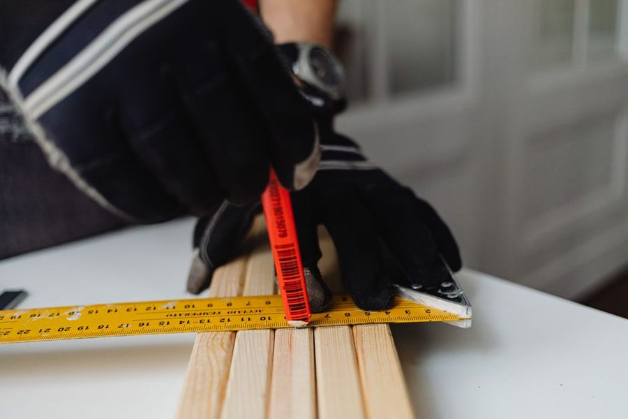

Rev. 1 · 01 abr · leitura de 5 minutos
Lápis, riscador e a face certa da peça
A maior parte dos erros de corte nasce na marcação, e não na serra. Marcar bem custa dez segundos a mais por peça.

Existe uma hierarquia de instrumentos de marcação, e ela não e questão de gosto: cada material aceita melhor um tipo de traço. Usar caneta em madeira crua borra; usar lápis em metal não marca; usar riscador em melamina lasca a superfície visível.
Qual instrumento em qual material
Madeira crua e compensado aceitam lápis de carpinteiro e riscador. Melamina e MDF revestido pedem lápis fino ou fita crepe marcada por cima, para não ferir o acabamento. Metal pede riscador ou punção. Alvenaria pede lápis de obra ou giz, que resistem a poeira.
Fita crepe tem uma segunda função útil em material revestido: além de receber a marcação, ela reduz o lascamento da borda durante o corte, porque segura a fibra da superfície no momento em que o dente sai.
A face certa
Toda peça tem uma face que vai aparecer e uma que vai ficar escondida. Marque sempre pela face que vai aparecer e corte de forma que o lascamento fique na face escondida. Em serra circular, o dente entra por baixo e sai por cima, então a face boa vai para baixo; em serrote, o contrário.
Vale anotar isso com um X a lápis na face escondida antes de começar. Parece excesso de zelo até a primeira porta de armário cortada com a face boa lascada.
De que lado do risco cortar
Escolha um critério e nunca mude no meio do trabalho. O mais usado: cortar sempre no lado do descarte, deixando o traço inteiro na peça boa. Assim, se a lâmina correr um milímetro, ela come material que ia fora de qualquer forma.
Um X pequeno desenhado no lado do descarte, ao lado de cada risco, resolve a dúvida meia hora depois, quando a peça já passou por outras mãos e ninguém lembra qual pedaço era o bom.
Marcação repetida
Quando a mesma cota se repete em varias peças, um gabarito de marcação (um pedaço de madeira com a medida exata, com um encosto na ponta) elimina a leitura da trena a cada peça. Menos leitura, menos erro de leitura.
O gabarito precisa ser conferido uma vez, com cuidado, e guardado com a medida escrita nele. Gabarito sem identificação vira sucata em duas semanas, e volta a ser usado por engano em outro trabalho.
Conferir a esquadria da regua
A regua ou o esquadro também podem estar fora. Um teste rápido: risque uma linha com o esquadro apoiado na borda da peça, vire o esquadro e risque de novo sobre a mesma linha. Se os dois riscos coincidirem, o esquadro está bom; se abrirem em V, o erro é da ferramenta e dobra a cada uso.
Este texto é revisado quando a prática mostra que a recomendação não se sustenta. A revisão vigente está indicada no topo da folha.